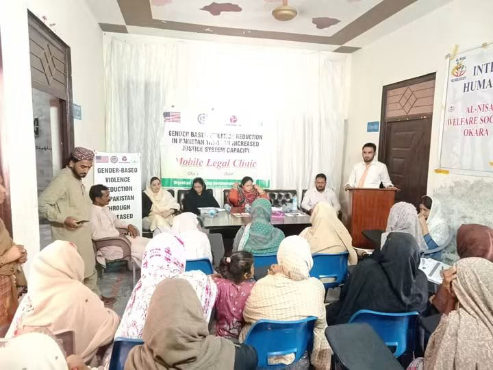
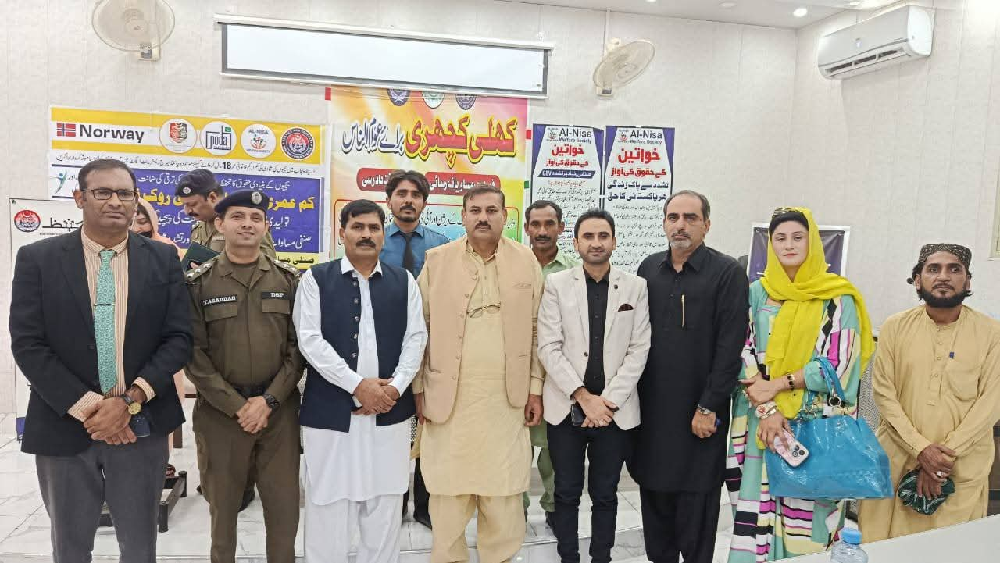
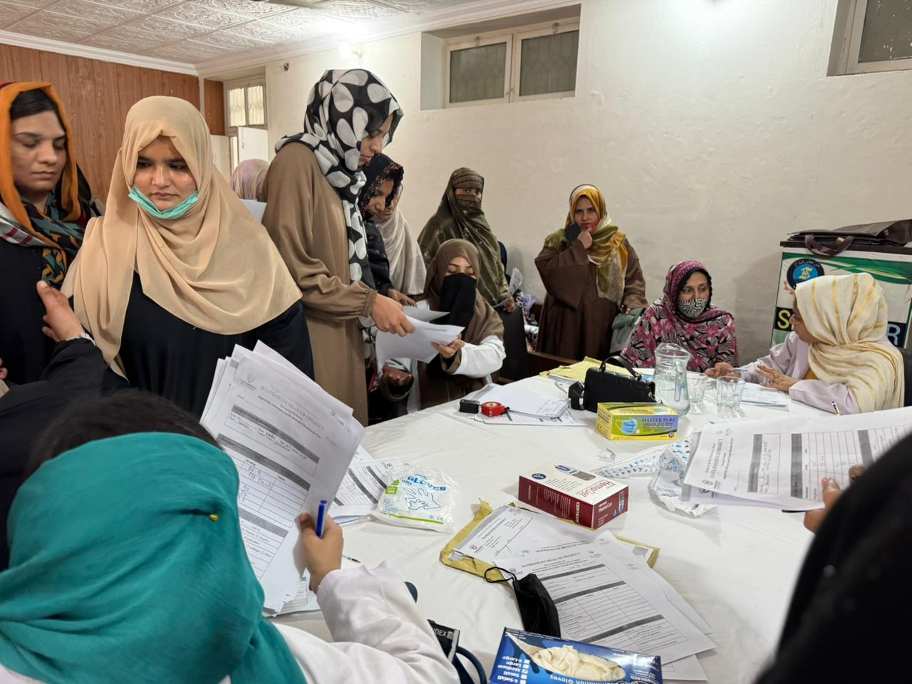
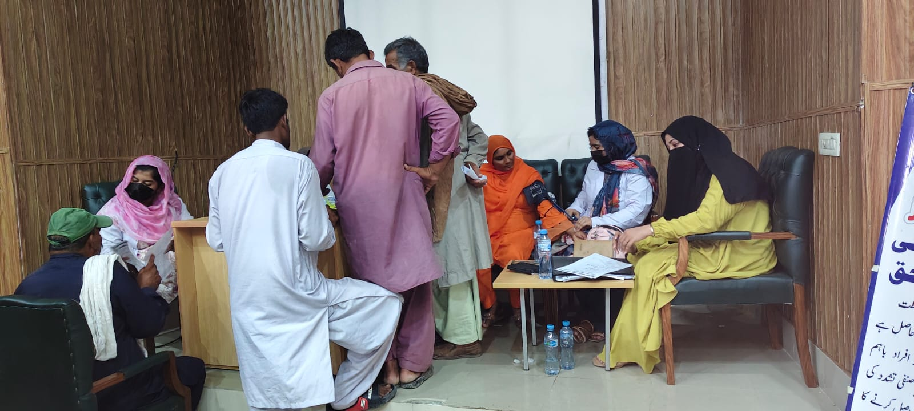
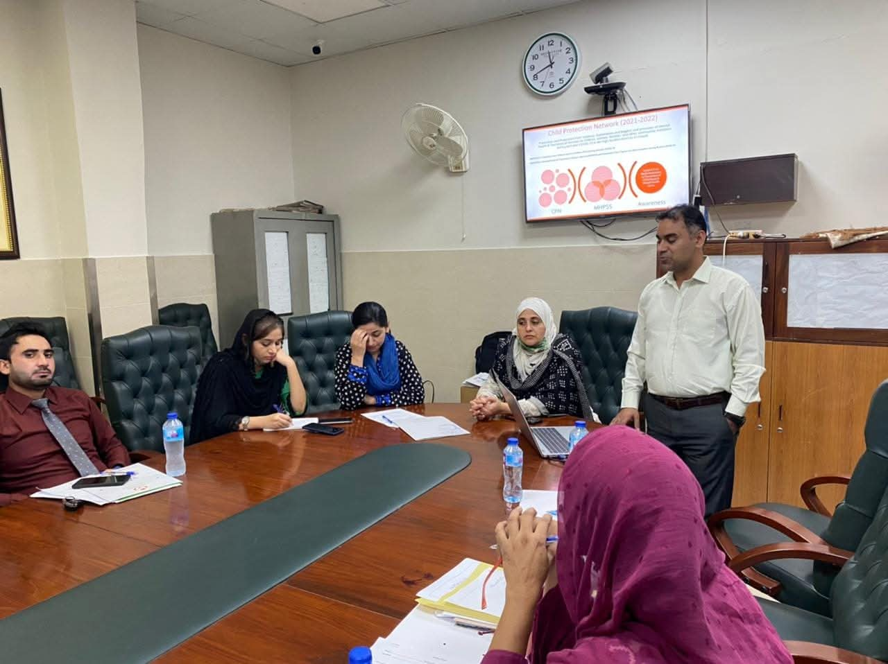

Practical Support for Women, Families, and Children
Al-Nisa Welfare Society is a registered NGO in Okara, Pakistan. We work with women, children, and families who face financial, social, or other barriers to essential services and opportunities.
Our programs focus on women’s empowerment, healthcare access, medical outreach, child protection, and community support. Our work is shaped by the needs we see in the communities we serve. Alongside direct support, we also use awareness, advocacy, referrals, and partnerships to help people reach appropriate services.
Women's Empowerment & Skills Development
Women’s empowerment is a central part of Al-Nisa’s work. We support women in developing practical skills and finding opportunities that can help them become more economically independent and make informed decisions about their lives and families.
Building Skills and Opportunities
Our work for women’s empowerment goes beyond short-term assistance. We focus on skills, access to opportunities, and support that can help women participate more actively in economic and community life.
Women and girls who face social or economic barriers to education, skills, or employment opportunities.
Practical skills, access to opportunities, and partnerships that support women's participation in family and community life.


Family Health & Medical Outreach
For many families, getting timely healthcare is not always easy. Financial difficulties, social barriers, and limited access to appropriate medical services can prevent people from seeking treatment when they need it.Al-Nisa works to improve healthcare access through community-based medical outreach and connections with healthcare providers.
Bringing Medical Support Closer
Our medical outreach brings MBBS doctors and volunteers into communities to provide support closer to the people who need it.The work focuses particularly on women and families who face financial or social barriers to healthcare.
Subsidized Healthcare & Referrals
Community medical outreach is supported by relationships with healthcare providers in Okara. Through arrangements with major hospitals, eligible marginalized patients referred through Al-Nisa may receive subsidized treatment.This helps families move from initial medical support in the community to further treatment when it is required, while reducing some of the financial pressure associated with healthcare.
Women, children, and families facing financial or social barriers to healthcare.
Medical outreach, healthcare professionals, referrals, and partnerships with healthcare institutions.


Child Protection & Community Awareness
Children can face risks such as abuse, exploitation, neglect, and harmful practices. Protecting them requires awareness within communities as well as coordination between families, institutions, and organizations working on child protection.Al-Nisa works on child protection and community awareness, with attention to issues affecting vulnerable children and families.
Protection, Awareness & Advocacy
Our work includes community awareness and advocacy around child protection and harmful practices affecting vulnerable children.Al-Nisa has also participated in child protection initiatives with UNICEF Pakistan, including discussions and activities related to child abuse prevention and anti-beggary efforts.
Children and families who may be vulnerable to abuse, exploitation, neglect, or other protection concerns.
Awareness, advocacy, community engagement, and collaboration with relevant institutions.


Working With Communities and Local Partners
Al-Nisa works with organizations and institutions that can provide expertise, services, and local coordination.Working with local and institutional partners allows us to connect community-level needs with professional services and wider resources
From Immediate Support to Long-Term Solutions
Al-Nisa’s current programs are part of a longer-term effort to improve healthcare access, strengthen child protection, and expand opportunities for women and families in Okara.These plans build on the work already taking place in the community: helping people access healthcare, develop skills, understand their rights, and find the support and opportunities available to them.
Under Vision 2030, the Society plans to develop women’s skill-development centers, reach female industrial workers, improve digital health and hospital referral systems, and establish an Al-Nisa Hub in Okara that brings mother and child healthcare together with vocational training.
Vision 2030 — PlannedBe Part of the change
Contribute through Partnerships, Volunteering, or supporting community initiatives. Help us reach more people, keep vulnerable groups safe and offer better chances for women and families.
Get Involved Learn About Our Impact